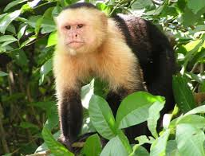
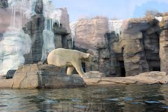
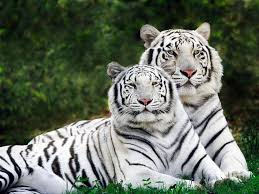
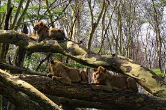

Interesting Capuchin monkey Facts: Capuchin monkeys are little compared to other primates. They can reach 12 to 22 inches in length and weight between 3 and 9 pounds. Capuchin monkey has prehensile tail that is the same length as the body. |

The most carnivorous of the bear species, polar bears feed primarily on the fat of ice-dependent seals. The remains of these seals provide food for many other Arctic wildlife species, giving polar bears a vital role in their ecosystem. Polar bears are marine mammals, and spend much of their time on Arctic sea ice. |

The tiger is the biggest species of the cat family.
Tigers can reach a length of up to 3.3 metres (11 feet) and weigh as much as 300 kilograms (660 pounds).
Subspecies of the tiger include the Sumatran Tiger, Siberian Tiger, Bengal Tiger, South China Tiger, Malayan Tiger and Indochinese Tiger. |

Unlike other cats, lions are very social animals. They live in groups, called prides, of around 30 lions. A pride consists of up to three males, a dozen related females, and their young. The size of the pride is determined by the availability of food and water. |